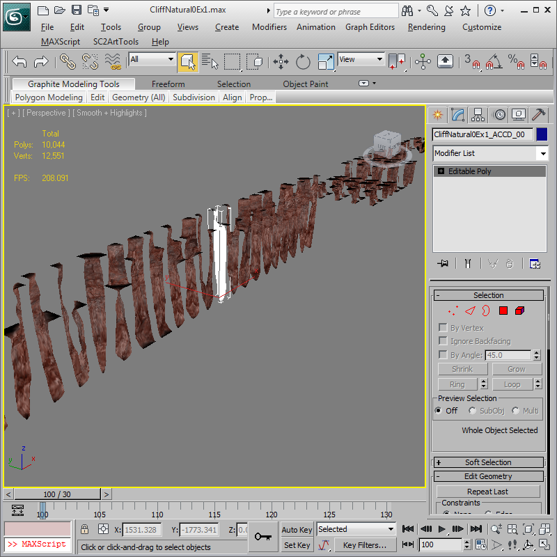
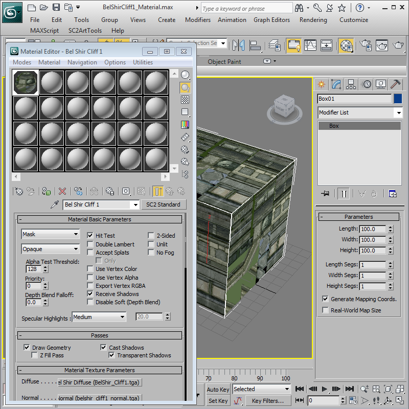

Appendix: Cliff Models
The Starcraft II engine uses a large set of 3d tiling models for each cliff type. CliffMade1.max in the example directory is an example of a Man-made type cliff set with fixed UVs and CliffNatural0Ex1.max is the basis of all the natural cliffs in Starcraft II: Heart of the Swarm that use procedural UVs.
Cliff Object Naming Requirements
The 3DSMax file and all cliff objects inside it need to have three sections separated by '_' in their naming to export and work in the game correctly.
CliffNatural0Ex1_BBDC_00
CliffNatural0Ex1_CCRS_00
Base Name of the objects must be the same as the 3dsmax file. In this example 'CliffNatural0Ex1' is the base name.
Four Letter Identifiers are used for each model that use the letters 'A', 'B', 'C', and 'D' for cliff heights of the corners with 'A' being the unplayable low terrain level and 'D' being the highest terrain level. Ramps use the letters Q, R, and S for denoting walkable cliff ramp corners from lowest to highest. The four corners are counted counterclockwise from above starting at the bottom left corner.
Two Digit Variation Count is at the very end on the object name. This needs to start with '_00' and can go up from there. Generally Starcraft II cliffs are made with four variations of common cliffs to disguise repetition.
Cliff Mesh Requirements
Each Cliff Object's outer vertices are precisely positioned to tile and be welded to its neighboring Cliff objects and terrain.

Outer Dimensions of the cliff objects are 200x200 units in X and Y directions. The 'B' cliff height is always at Z height 0. 'C' and 'D' are at 200 and 400 Z height respectively. The non-playable low terrain is set in data but is most commonly -800 Z height. The Pivot Point of each cliff object must be in the middle of X and Y dimension and placed exactly at 0 height.
Pathing Requirements of cliffs require the top one-half of a cliff to be mostly flat for units to walk on. The Bottom portions are un-walkable.
Cliff Tiling requires the profile of the cliff to cliff edges needs to have identical vertex positions in all pieces that match cliff heights. Example: All B-C and C-B Cliff sides must have identical profiles. For sides that have the same letter code (example: B-B) the vertices must match the terrain cells with a single vertex in the middle of the 200 unit long edge. In The Starcraft II engine these cliff pieces can be rotated as needed.
Vertex Color is required for using the Tri Planar Cliff texturing. Black in the Vertex Color Alpha will cause the terrain material to show through to be used on the tops and bottoms of the cliff objects.
Space Cliff Edge type tilesets like CliffMade1.max have the bottom 'A' height terrain hidden and the cliff mesh just ends at the lowest level.
Cliff Materials
Cliff Objects themselves use a material from another model. The same mesh can be used with a different material to save disk space. The Man-made type cliffs will use as cliff material that is built to match the UVs of that cliff. CliffMade1.max uses BelShirCliff1_Material.max and CliffMade6.max uses BraxisAlphaCliff1_Material.max.
Material Settings for cliff materials for most cliffs must be Mask Blend mode with the Alpha Mask texture revealing the terrain in walkable areas or Mask Opaque with the Alpha Mask and Alpha Test Threshold above 0.
Tri Planar Cliff Materials
Cliff Objects themselves use a material from another model. The same mesh can be used with a different material to save disk space. With Heart of the Swarm we added a new material type called Tri Planar Blending. Load the max file CliffNatural2_Material.max to see how the Tri Planar Material is set up.

Tri Planar Cliff materials must use the Mask Material Preset, and the Blend Material Blend Mode. Use Vertex Color and Export Vertex RGBA should both be on. The Mapping setting in all relevant SC2 Bitmap slots should be set to Tri Planar World Local Z. Extra documentation on this mapping setting is available in the SC2 Bitmap documentation.
Atlas Textures procedurally blend along each of the three major axes. The First Diffuse Texture CliffNatural2_diffuse_00.tga draws in both the X and Y world axis directions with a blend based on normal direction. The second texture in the Atlas is auto detected by name. In the example CliffNatural2_diffuse_01.tga blends from the top and bottom. With proper textures, there should be no seams, and no need for UVs. Both Atlas textures must be the same dimensions. The material layers for Normal Map and Specular Map use Atlas Textures the same way.